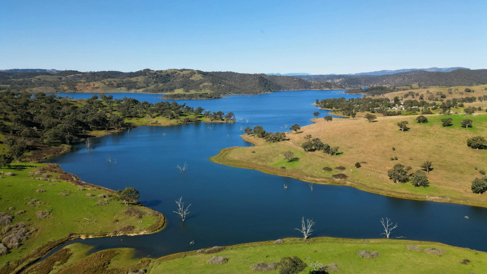

September 2025
Built an NLP pipeline on 18k+ Reddit posts to detect mental-health risk levels (low/medium/high).
Fine-tuned DistilBERT with pooling, MSD dropout, EMA, and class-weighted loss, achieving stronger
macro-F1 and better minority-class recall. Focused on ethical handling, reproducibility, and deployment readiness.

Python · PyTorch · Transformers · NLP · Machine Learning
Analysed 16k+ Colchester crime records alongside local weather data to reveal seasonal and spatial trends.
Built interactive dashboards and animated visualisations in R (ggplot2, plotly, leaflet) to uncover hotspots
and highlight weak-to-moderate associations between weather factors and crime categories.
R · Data Visualisation · Time Series · Spatial Analysis · Interactive Dashboards
Predicted short-horizon stock returns using engineered indicators (MA, RSI, volatility) and models including
SVM, Random Forest, and Neural Networks. Evaluated with regression and strategy metrics (MSE, Sharpe, drawdown)
using walk-forward validation to ensure realistic performance.
Python · Machine Learning · Time Series Forecasting · Finance · Predictive Modelling

Applied unsupervised NLP on consumer laptop reviews to extract themes such as battery life, performance, and value for money.
Compared LDA with BERTopic for topic coherence and interpretability, then built visualisations (heatmaps, sentiment by topic) to reveal brand-specific strengths and weaknesses.
Python · NLP · Topic Modelling · BERTopic · LDA
Constructed efficient frontiers using CAPM-based expected returns and compared allocation strategies including
mean–variance, risk-parity, and equal-weight benchmarks. Backtested portfolios with rolling windows to evaluate
Sharpe ratios, drawdowns, and stability, highlighting the trade-offs between risk and return.
Python · Quantitative Finance · Optimisation · Risk Analysis · Data Science

Modelled biodiversity variation using ecological variables such as climate, elevation, and land cover.
Applied regression and regularisation with cross-validation to identify key environmental drivers while
ensuring robust generalisation. Demonstrated the adaptability of data science methods to sustainability
and ecological research domains.
R · Regression · Cross-validation · Environmental Data · Statistical Modelling
About Me
I am a Data Scientist with over 3 years of professional experience at Infosys, where I worked on automation, KPI reporting, and BI dashboard solutions for global retail and finance clients. This experience built my foundation in data analytics, business intelligence, and scalable reporting systems, while also giving me exposure to Agile teamwork and cross-functional collaboration.
Currently, I have recently completed my MSc in Data Science (University of Essex, UK), focusing on AI, NLP, and Machine Learning applications. My portfolio showcases academic and applied projects in NLP, deep learning, and data visualisation, demonstrating my ability to bridge industry experience with research-driven data science.
Skills:
Python · R · SQL · PyTorch · Transformers · Scikit-learn · Tableau · Power BI